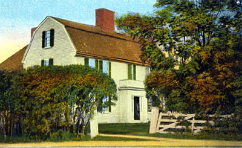
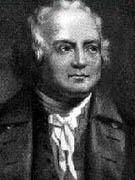

The Danvers Museum at the Israel Putnam House

ca. 1910
| The Putnam House served as home to many generations of a prominent local family. The original property consisted of 100 acres of farmland owned by Thomas Putnam in what was then Salem Village. In 1692, Joseph Putnam lived on the property and spoke out against the witchcraft hysteria gripping the village. In the 1850s, Daniel Putnam operated a shoe-making shop here. A century later, passing motorists stopped for candies and ice cream served in the Putnam Pantry. The best-known resident of the house was General Israel Putnam, who commanded troops at the Battle of Bunker Hill. | |
| The Danvers Museum at the Israel Putnam House contains exhibits on local and regional history. Then known as Salem Village, the principal events of the witchcraft tragedy of 1692 occurred in Danvers. In the 19th century, the town became famous for its agricultural output, including the Danvers Globe Onion and the Danvers Half-Long Carrot. In the 21st century, Danvers is home to manufacturers of consumer lighting products and the world’s first mechanical heart. In addition to exhibits, the Putnam House features a museum store. Self-guided tour maps of historic sites in Danvers, including sites related to the witchcraft tragedy, are available free of charge courtesy of the Danvers Preservation Commission. The house is located directly behind the Putnam Pantry. | |
|

|
Directions:431 Maple Street, Danvers, MA (on-ramp for Route 1 off of Route 62) Admissions information: Open June through September on Saturdays from 10AM to 5PM and Sundays from 1 to 5PM. Admission charged. Pre-scheduled group tours available. |
|
Operated by the Danvers Historical Society, PO
Box 381, Danvers, MA 01923
DHS Office: (978) 777-1666 email: dhs@danvershistory.org Website: www.danvershistory.org |
|